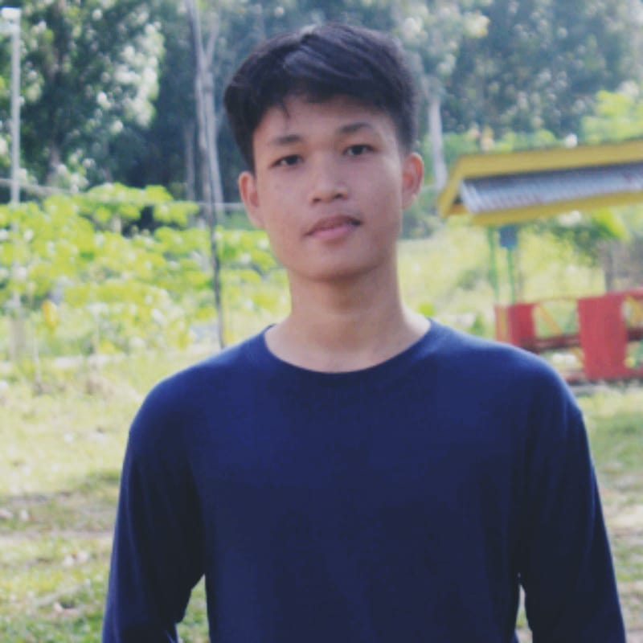

Tentang Saya
Perkenalkan Saya Tomi saputra gea, seorang mahasiswa aktif jurusan Teknik Informatika UNIVESITAS PUTERA BATAM (UPB) yang saat ini berada di semester 4.
Saya memiliki minat besar dalam menciptakan solusi digital yang tidak hanya fungsional tetapi juga menarik secara visual. Melalui proyek ini, saya ingin memperkenalkan keindahan dan keunikan hewan-hewan laut kepada masyarakat luas dengan cara yang informatif dan interaktif. Bagi saya, teknologi adalah alat yang hebat untuk berbagi pengetahuan, membangun kreativitas, dan menginspirasi orang lain.